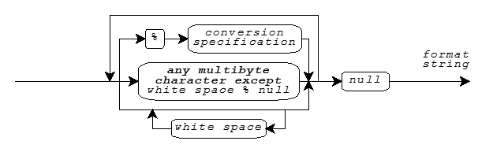

Print Formats · Print Functions · Print Conversion Specifiers
Several library functions help you convert data values from encoded internal representations to text
sequences that are generally readable by people. You provide a format string
as the value of the format argument to each of these functions, hence the term formatted
output. The functions fall into two categories.
The byte print functions (declared in <stdio.h>) convert internal representations to sequences
of type char, and help you compose such sequences for display: fprintf, printf, sprintf, vfprintf, vprintf, and vsprintf. For these function, a
format string is a multibyte string that begins and ends in
the initial shift state.
The wide print functions (declared in <wchar.h> and hence added with Amendment 1) convert internal representations to sequences of type
wchar_t, and help you compose such sequences for display:
fwprintf, swprintf, wprintf, vfwprintf, vswprintf, and vwprintf. For these functions,
a format string is a wide-character string. In the
descriptions that follow, a wide character wc from a format string or a stream is compared to
a specific (byte) character c as if by evaluating the expression wctob(wc) == c.
A format string has the same syntax for both the print functions and the scan functions, as shown in the diagram.

A format string consists of zero or more conversion
specifications interspersed with literal text and white space.
White space is a sequence of one or more characters c for which the call isspace(c) returns nonzero. (The characters defined as white space can
change when you change the LC_CTYPE locale category.) For the print functions, a conversion specification
is one of the print conversion specifications described
below.
A print function scans the format string once from beginning to end to determine what conversions to
perform. Every print function accepts a varying
number of arguments, either directly or under control of an argument of type va_list. Some print conversion specifications in the format string
use the next argument in the list. A print function uses each successive argument no more than once.
Trailing arguments can be left unused.
In the description that follows:
d, i,
o, u, x, or Xe, E, f, F, g, or
GFor the print functions, literal text or white space in a format string generates characters that match the characters in the format string. A print conversion specification typically generates characters by converting the next argument value to a corresponding text sequence. A print conversion specification has the format:
Boldface Italic indicates a feature added after C99. Support for fixed-point conversions is added with the C Technical Report TR18037. These closely match the extensions for the Freescale Signal Processing Engine Auxiliary Processing Unit. This implementation also includes, as a conforming extension, conversions for the vectors supported by the Freescale AltiVec architecture.
Following the percent character (%) in the format string, you can write an optional
position, which consists of a nonzero decimal integer followed by a
dollar sign ($). If present, an argument position with value N indicates
that at least N arguments to the print function follow, all having the type required for the
conversion specifier. Argument number N, counting from 1, is the one converted; no arguments
are skipped over. If no argument position is present, the next argument to the print function has the type
required for the conversion specifier. It is converted and then skipped over. (This implementation supports
argument positions as a conforming extension.)
Following any argument position, you can write zero or more format flags:
- -- to left-justify a conversion+ -- to generate a plus sign for signed values that are positivespace -- to generate a space for signed values that
have neither a plus nor a minus sign# -- to prefix 0 on an o conversion, to prefix
0x on an x conversion, to prefix 0X on an X
conversion, or to generate a decimal point and fraction digits that are otherwise suppressed on a
floating-point conversion0 -- to pad a conversion with leading zeros after any sign or prefix, in the
absence of a minus (-) format flag or a specified precisionFor AltiVec vector conversions, you can intersperse format flags with an optional separator, the characters comma, semicolon, equal sign, or underscore. The conversion occurs for each of the elements of the vector, and generates a separator between each pair of elements. If you specify no separator, the default is:
c conversion specifier, no character.Following any format flags, you can write a field width that
specifies the minimum number of characters to generate for the conversion. Unless altered by a format flag,
the default behavior is to pad a short conversion on the left with space characters. If
you write an asterisk (*) instead of a decimal number for a field width, then a print
function takes the value of the next argument (which must be of type int) as the field width. If the
argument value is negative, it supplies a - format flag and its magnitude is the field
width.
Following any field width, you can write a dot (.) followed by a precision that specifies one of the following: the minimum number of digits to generate
on an integer conversion; the number of fraction digits to generate on an e, E,
or f conversion; the maximum number of significant digits to generate on a g or
G conversion; or the maximum number of characters to generate from a C string on an s conversion.
If you write an * instead of a decimal number for a precision, a print function
takes the value of the next argument (which must be of type int) as the precision. If the argument
value is negative, the default precision applies. If you do not write either an * or a decimal
number following the dot, the precision is zero.
Following any precision, you must write a one-character print conversion specifier, possibly preceded by a one- or two-character qualifier. Each combination determines the type required of the next argument (if any) and how the library functions alter the argument value before converting it to a text sequence. The integer and floating-point conversions also determine what base to use for the text representation. If a conversion specifier requires a precision p and you do not provide one in the format, then the conversion specifier chooses a default value for the precision.
In the descriptions that follow, array declarations for arguments are not to be taken literally. A declaration of the form:
short x[8]
is shorthand for:
struct {short x[8]; }
And a cast of the form:
(short x[8])x
is shorthand for:
*(struct {short x[8]; } *)&x
The following table lists all defined combinations and their properties:
Conversion Argument Converted Default Pre- Specifier Type Value Base cision %a double x (double)x 10 big added with C99 %La long double x (long double)x 10 big added with C99 %A double x (double)x 10 big added with C99 %LA long double x (long double)x 10 big added with C99 %c int x (unsigned char)x %lc wint_t x (wchar_t)x %vc char x[16] (char [16])x AltiVec %d int x (int)x 10 1 %hd int x (short)x 10 1 %ld long x (long)x 10 1 %hhd int x (signed char)x 10 1 added with C99 %jd intmax_t x (intmax_t)x 10 1 added with C99 %lld long long x (long long)x 10 1 added with C99 %td ptrdiff_t x (ptrdiff_t)x 10 1 added with C99 %zd size_t x (ptrdiff_t)x 10 1 added with C99 %vd char x[16] (signed char [16])x AltiVec %hvd short x[8] (short [8])x AltiVec %vhd short x[8] (short [8])x AltiVec %lvd int x[4] (int [4])x AltiVec %vld int x[4] (int [4])x AltiVec %e double x (double)x 10 6 %Le long double x (long double)x 10 6 %ve float x[4] (float [4])x 10 6 AltiVec %E double x (double)x 10 6 %LE long double x (long double)x 10 6 %vE float x[4] (float [4])x 10 6 AltiVec %f double x (double)x 10 6 %Lf long double x (long double)x 10 6 %vf float x[4] (float [4])x 10 6 AltiVec %F double x (double)x 10 6 added with C99 %LF long double x (long double)x 10 6 added with C99 %vF float x[4] (float [4])x 10 6 AltiVec %g double x (double)x 10 6 %Lg long double x (long double)x 10 6 %vg float x[4] (float [4])x 10 6 AltiVec %G double x (double)x 10 6 %LG long double x (long double)x 10 6 %vG float x[4] (float [4])x 10 6 AltiVec %i int x (int)x 10 1 %hi int x (short)x 10 1 %li long x (long)x 10 1 %hhi int x (signed char)x 10 1 added with C99 %ji intmax_t x (intmax_t)x 10 1 added with C99 %lli long long x (long long)x 10 1 added with C99 %ti ptrdiff_t x (ptrdiff_t)x 10 1 added with C99 %zi size_t x (ptrdiff_t)x 10 1 added with C99 %vi char x[16] (signed char [16])x AltiVec %hvi short x[8] (short [8])x AltiVec %vhi short x[8] (short [8])x AltiVec %lvi int x[4] (int [4])x AltiVec %vli int x[4] (int [4])x AltiVec %k accum x (accum)x 10 6 added with TR18037 %hk short accum x (short accum)x 10 6 added with TR18037 %lk long accum x (long accum)x 10 6 added with TR18037 %K unsigned accum x (unsigned accum)x 10 6 added with TR18037 %hK unsigned short accum x (unsigned short accum)x 10 6 added with TR18037 %lK unsigned long accum x (unsigned long accum)x 10 6 added with TR18037 %n int *x %hn short *x %ln long *x %hhn int *x added with C99 %jn intmax_t *x added with C99 %lln long long *x added with C99 %tn ptrdiff_t *x added with C99 %zn size_t *x added with C99 %o int x (unsigned int)x 8 1 %ho int x (unsigned short)x 8 1 %lo long x (unsigned long)x 8 1 %hho int x (unsigned char)x 8 1 added with C99 %jo intmax_t x (uintmax_t)x 8 1 added with C99 %llo long long x (unsigned long long)x 8 1 added with C99 %to ptrdiff_t x (size_t)x 8 1 added with C99 %zo size_t x (size_t)x 8 1 added with C99 %vo char x[16] (unsigned char [16])x AltiVec %hvo short x[8] (unsigned short [8])x AltiVec %vho short x[8] (unsigned short [8])x AltiVec %lvo int x[4] (unsigned int [4])x AltiVec %vlo int x[4] (unsigned int [4])x AltiVec %p void *x (void *)x %r fract x (fract)x 10 6 added with TR18037 %hr short fract x (short fract)x 10 6 added with TR18037 %lr long fract x (long fract)x 10 6 added with TR18037 %R unsigned fract x (unsigned fract)x 10 6 added with TR18037 %hR unsigned short fract x (unsigned short fract)x 10 6 added with TR18037 %lR unsigned long fract x (unsigned long fract)x 10 6 added with TR18037 %s const char *x (const char *)x big %ls const wchar_t *x (const wchar_t *)x big %u int x (unsigned int)x 10 1 %hu int x (unsigned short)x 10 1 %lu long x (unsigned long)x 10 1 %hhu int x (unsigned char)x 10 1 added with C99 %ju intmax_t x (uintmax_t)x 10 1 added with C99 %llu long long x (unsigned long long)x 10 1 added with C99 %tu ptrdiff_t x (size_t)x 10 1 added with C99 %zu size_t x (size_t)x 10 1 added with C99 %vu char x[16] (unsigned char [16])x AltiVec %hvu short x[8] (unsigned short [8])x AltiVec %vhu short x[8] (unsigned short [8])x AltiVec %lvu int x[4] (unsigned int [4])x AltiVec %vlu int x[4] (unsigned int [4])x AltiVec %x int x (unsigned int)x 16 1 %hx int x (unsigned short)x 16 1 %lx long x (unsigned long)x 16 1 %hhx int x (unsigned char)x 16 1 added with C99 %jx intmax_t x (uintmax_t)x 16 1 added with C99 %llx long long x (unsigned long long)x 16 1 added with C99 %tx ptrdiff_t x (size_t)x 16 1 added with C99 %zx size_t x (size_t)x 16 1 added with C99 %vx char x[16] (unsigned char [16])x AltiVec %hvx short x[8] (unsigned short [8])x AltiVec %vhx short x[8] (unsigned short [8])x AltiVec %lvx int x[4] (unsigned int [4])x AltiVec %vlx int x[4] (unsigned int [4])x AltiVec %X int x (unsigned int)x 16 1 %hX int x (unsigned short)x 16 1 %lX long x (unsigned long)x 16 1 %hhX int x (unsigned char)x 16 1 added with C99 %jX intmax_t x (uintmax_t)x 16 1 added with C99 %llX long long x (unsigned long long)x 16 1 added with C99 %tX ptrdiff_t x (size_t)x 16 1 added with C99 %zX size_t x (size_t)x 16 1 added with C99 %vX char x[16] (unsigned char [16])x AltiVec %hvX short x[8] (unsigned short [8])x AltiVec %vhX short x[8] (unsigned short [8])x AltiVec %lvX int x[4] (unsigned int [4])x AltiVec %vlX int x[4] (unsigned int [4])x AltiVec %% none (char)'%'
The print conversion specifier determines any behavior not summarized in this table. For all floating-point conversions:
inf or INF.-inf or -INF.nan or NAN.The upper-case version prints only for an upper-case conversion specifier, such as %E but
not %Lg.
In the following descriptions, p is the precision. Examples follow each of the print conversion specifiers. A single conversion can generate up to 509 characters.
You write %a or %A to generate
a signed hexadecimal fractional representation with a decimal power-of-two exponent. The generated text
takes the form ±0Xh.hhhP±dd, where ± is either a plus or minus sign,
X is either x (for %a conversion) or X (for %A
conversion), h is a hexadecimal digit, d is a decimal digit, the hexadecimal point (.)
is the decimal point for the current locale, and P is either
p (for %a conversion) or P (for %A conversion). The
generated text has one integer digit which is zero only for the value zero, a hexadecimal point if any
fraction digits are present or if you specify the # format flag, at most p fraction
digits with no trailing zeros, and at least one exponent digit with no leading zeros. The result is
rounded. The value zero has a zero exponent.
printf("%a", 30.0) generates, e.g. 0xfp+1
printf("%.2A", 30.0) generates, e.g. 0XF.00P+1
You write %c to generate a single character from the converted
value.
printf("%c", 'a') generates a
printf("<%3c|%-3c>", 'a', 'b') generates < a|b >
For a wide stream, conversion of the character x
occurs as if by calling btowc(x).
wprintf(L"%c", 'a') generates wide a
You write %lc to generate a single character from the converted
value. Conversion of the character x occurs as if it is followed by a null character in an
array of two elements of type wchar_t converted by the
conversion specification ls.
printf("%lc", L'a') generates a
wprintf(L"lc", L'a') generates wide a
You write %d, %i, %o, %u, %x, or %X to generate a possibly signed
integer representation. %d or %i specifies signed decimal representation,
%o unsigned octal, %u unsigned decimal, %x unsigned hexadecimal
using the digits 0-9 and a-f, and %X unsigned hexadecimal using the
digits 0-9 and A-F. The conversion generates at least p digits to
represent the converted value. If p is zero, a converted value of zero generates no digits.
printf("%d %o %x", 31, 31, 31) generates 31 37 1f
printf("%hu", 0xffff) generates 65535
printf("%#X %+d", 31, 31) generates 0X1F +31
You write %e or %E to generate
a signed decimal fractional representation with a decimal power-of-ten exponent. The generated text takes
the form ±d.dddE±dd, where ± is either a plus or minus sign, d is
a decimal digit, the decimal point (.) is the decimal point for the current locale, and E is either e (for %e conversion) or
E (for %E conversion). The generated text has one integer digit, a decimal point
if p is nonzero or if you specify the # format flag, p fraction digits, and at
least two exponent digits. The result is rounded. The value zero has a zero exponent.
printf("%e", 31.4) generates 3.140000e+01
printf("%.2E", 31.4) generates 3.14E+01
You write %f %F, %k, %K, %r, or %R to generate a signed decimal
fractional representation with no exponent. The generated text takes the form ±d.ddd, where
± is either a plus or minus sign, d is a decimal digit, and the decimal point
(.) is the decimal point for the current locale. The generated text
has at least one integer digit, a decimal point if p is nonzero or if you specify the #
format flag, and p fraction digits. The result is rounded.
printf("%f", 31.4) generates 31.400000
printf("%.0f %#.0f", 31.0, 31.0)generates 31 31.
You write %g or %G to generate
a signed decimal fractional representation with or without a decimal power-of-ten exponent, as appropriate.
For %g conversion, the generated text takes the same form as either %e or
%f conversion. For %G conversion, it takes the same form as either
%E or %F conversion. The precision p specifies the number of significant
digits generated. (If p is zero, it is changed to 1.) If %e conversion would yield an
exponent in the range [-4, p), then %f conversion occurs instead. The generated text
has no trailing zeros in any fraction and has a decimal point only if there are nonzero fraction digits,
unless you specify the # format flag.
printf("%.6g", 31.4) generates 31.4
printf("%.1g", 31.4) generates 3.14e+01
You write %n to store the number of characters generated (up to
this point in the format) in an integer object whose address is the value of the next successive
argument.
printf("abc%n", &x) stores 3
You write %p to generate an external representation of a pointer
to void. The conversion is implementation defined.
printf("%p", (void *)&x) generates, e.g. F4C0
You write %s to generate a sequence of characters from the values
stored in the argument C string.
printf("%s", "hello") generates hello
printf("%.2s", "hello") generates he
For a wide stream, conversion occurs as if by repeatedly
calling mbrtowc, beginning in the initial conversion state. The conversion generates no more
than p characters, up to but not including the terminating null character.
wprintf(L"%s", "hello") generates wide hello
You write %ls to generate a sequence of characters from the values
stored in the argument wide-character string. For a
byte stream, conversion occurs as if by repeatedly calling
wcrtomb, beginning in the initial conversion state, so long as complete multibyte
characters can be generated. The conversion generates no more than p characters, up to but not
including the terminating null character.
printf("%ls", L"hello") generates hello
wprintf(L"%.2s", L"hello") generates wide he
You write %% to generate the percent character
(%).
printf("%%") generates %
See also the Table of Contents and the Index.
Copyright © 1992-2010 by P.J. Plauger and Jim Brodie. All rights reserved.